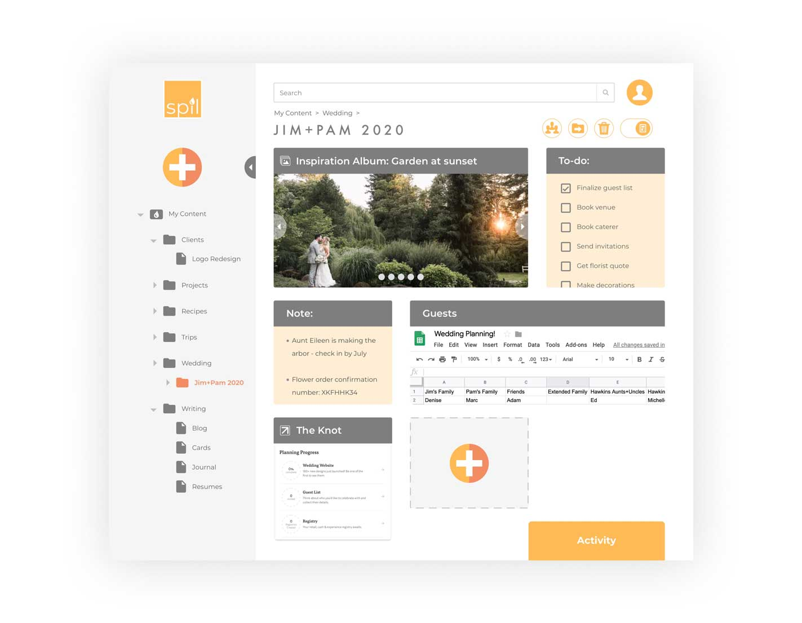

goBus is a local city transit application serving thousands of commuters in Chicago.
VIEW PROTOTYPE
THE SITUATION
goBus riders have practical needs: they want to know what the next arriving bus is at a given stop, and how much time they have to get there. goBus informed me that this problem got much worse when they added new bus lines to the Washington & State bus stop, challenging riders to find their bus among a possible seven bus lines.
MY TAKE
I saw an opportunity to make everything goBus riders needed easily accessible from the palm of their hands - right where they need it when they are on the go. I researched my client, their users and the city transit tracking competitive space, and designed a three-screen prototype to demonstrate how iPhone users would access the goBus app to find their bus.

MY ROLE
UX Design
UI Design
Branding
DELIVERABLES
Competitive analysis
User research
User stories
Wireframes
Usability testing
HiFi prototype
TOOLS
Sketch
InVision
Flinto
GitHub
Let's take a look at how we got there
1
COMPETITIVE ANALYSIS
My research began with analyzing the mobile transit app competitive landscape. I focused on two competitors:
Moovit and Transit.
This analysis identified the most valuable public transit app features, including route planning, live maps, nearby bus stops and stations, on-the-go alerts and step-by-step instructions.
While competitors offered a range of functionality within their apps, it became apparent that both apps would benefit from simplifying the total tasks and the presentation of these tasks within the app. This was an opportunity for screens with singular, clear messages and actions, uncrowded by additional community support features or alternate transportation options.
| Live maps and GPS tracking | ||
| Trip planning | ||
| Multiple transit modes (buses, ferries, rapid transit) |  |
|
| Global community + availability | |
|
| Real-time alerts for active trips | |
|
| Integration with rideshare services |
SWOT Analysis
2
USER RESEARCH
I next interviewed and surveyed commuters to ensure I was prioritizing their needs and preferences in my design.
I learned that two primary roles exist among bus riders:
1. local bus riders looking for a stress-free, economic way to get around town, and
2. visitors to the city.
I also learned that these bus riders rely largely on the bus number to identify and board the correct bus. Secondary identifiers included bus timing, logo, and color.
-
35%
took the bus when visiting a new city
-
40%
took the bus to save money or travel stress-free
-
 85%
85%identified their bus by the bus number
Survey Results
4
WIREFRAMES
I used my research to create a paper prototype with a clean and simple design suitable for local experts and city visitors alike. I sketched several mobile app screen variations that would address 4 high-priority tasks. These included identifying a given bus route, confirming the number, color and ETA of a given bus, finding the bus stop closest to a given location and identifying the next bus arriving to this stop. These wireframes allowed me to conduct usability testing and iterate on my initial design concept.
TAKE-AWAYS
“Go” was an unclear call to action; test participants noted that the word “Go” was confusing, and “Start” would be more clear and direct.
“More…” was an unclear call to action. Participants noted that the placement made this action appear linked to the “Go” action, instead of indicating an option for “more routes”.
The “Nearby Stations” tab was not seen as valuable, without immediately breaking out a timetable of all lines (bus numbers) that pass through a given stop or station.
5
HIGH-FIDELITY PROTOTYPE
After collecting user feedback on my paper prototype, I was ready to translate my work into a high-fidelity prototype in Sketch.
I selected the typefaces and color palette to support my chosen brand direction: bright, friendly and eager to help get you where you need to go. Finally, I animated the primary interaction to show how bus riders will easily find their bus, thanks to goBus!
VIEW PROTOTYPE
WRAPPING IT ALL UP
Working with goBus was a fascinating exposure to the travel habits of bus riders. Demonstrating a solution that I thought could truly serve their needs was specifically satisfying. For this reason, this project challenged me to adapt when I felt I wasn’t able to prioritize the explicit needs my users expressed during the research phase. I was instead forced to compromise. I used the opportunity to gain my client’s trust by delivering a solution that responded to their biggest pain point, and reserved the more robust solution for future iterations.
In the future, I will set my expectations early on, and anticipate that my client’s expressed need may conflict with the data I collect. My work with goBus was the perfect reminder that a designer must balance business objectives with our users’ needs. In truth, we are always seeking balance, and this may frequently come in the form of compromise. Our goal is to make our user the highest priority in that balance, while supporting the business objectives that make delivering a solution possible.
Ready for another?
-

Spil Cloud Storage
Product Design + Branding
Learn more
-

The Bridge
Product Design
Learn more